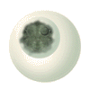
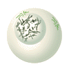
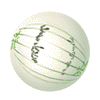

The Biology Project > Cell Biology > Intro to Onion Root Tips Activity > Activity
Online Onion Root Tips
Determining time spent in different phases of the cell cycle
The life cycle of the cell is typically divided into 5 major phases. The phases are listed below, along with the major events that occur during each phase.
 Interphase. The cell is engaged in metabolic activity and performing its duty as part of a tissue. The DNA duplicates during interphase to prepare for mitosis (the next four phases that lead up to and include nuclear division). Chromosomes are not clearly discerned in the nucleus, although a dark spot called the nucleolus may be visible.
 Prophase. Chromatin in the nucleus begins to condense and becomes visible in the light microscope as chromosomes. The nuclear membrane dissolves, marking the beginning of prometaphase. Proteins attach to the centromeres creating the kinetochores. Microtubules attach at the kinetochores and the chromosomes begin moving.
Metaphase. Spindle fibers align the chromosomes along the middle of the cell nucleus. This line is referred to as the metaphase plate. This organization helps to ensure that in the next phase, when the chromosomes are separated, each new nucleus will receive one copy of each chromosome.
 Anaphase. The paired chromosomes separate at the kinetochores and move to opposite sides of the cell. Motion results from a combination of kinetochore movement along the spindle microtubules and through the physical interaction of polar microtubules.
Telophase. New membranes form around the daughter nuclei while the chromosomes disperse and are no longer visible under the light microscope. Cytokinesis or the partitioning of the cell may also begin during this stage.
The Biology Project > Cell Biology > Intro to Onion Root Tips Activity > Activity
The University of Arizona
Thursday, August 20, 1998
Revised: August 2004
Contact the Development Team
http://www.biology.arizona.edu
All contents copyright © 1997-8. All rights reserved.